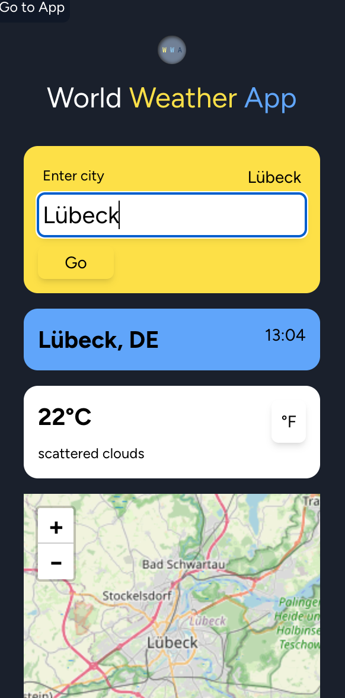
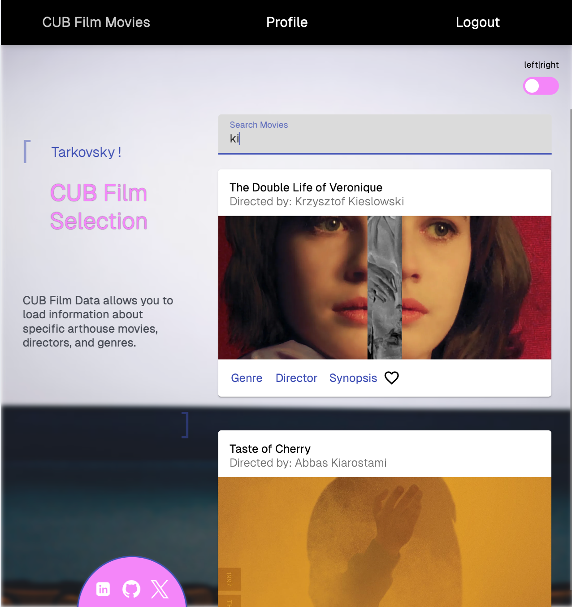

Weather Application, a
React-based project, provides users with real-time weather
updates for cities around the world through a dynamic and
responsive interface. Users can search for any city to view
current weather conditions, a five-day forecast, and live
weather icons.
The app also features a browser extension for quick access to
weather data and maps directly from the browser. Additionally,
the application adapts its background gradient to match
current weather conditions, such as sunny, cloudy, or
nighttime settings, creating a visual feedback. This project
enhanced my skills in
React, allowed me to integrate
the OpenWeatherMap API, and
taught me how to create smooth animations with
Framer Motion. The interactive
maps are powered by Leaflet.

Film Data Angular
An Angular Application For An Arthouse Movie Database
CUB Film Data (Angular), an
Angular-based project, stands as the frontend interface of a
movie database (which I built previously as
REST-Api
for the backend). Users can browse through movies, get data
about directors and genres, or edit their profile.
For the project I learnt
Typescript and
Angular which I found
easier than React, generally structured and pleasant to work
with.
Prior to implementation,
user stories
helped me to visualize necessary interfaces and routes (see
link), aiding in the understanding of required operations and
serving as a helpful visualization tool.

Meet App
A React App For Developer Events In Different Cities
Meet App is a PWA
(Progressive Web Application) built in React. The application
gathers and displays upcoming developer-centric events in
different cities worldwide by connecting to a Google Calendar
API using OAuth authorization.
Designed to function across browsers, it also
offers desktop installation and offline functionality
providing users with a dynamic and accessible event
exploration experience.
This project was written in TDD (Test-Driven Development),
prioritizing test-writing before code implementation to ensure
robustness and reliability.
Mobile Chat App
A Chat App For Mobile Devices, Built In React Native
CUB Film Data (React), a
React-based project, stands as the frontend interface of a movie
database (which I built previously as
REST-Api
for the backend).
Users are able to create and edit a profile, browse and filter
through all movies, get detailed information on a movie, and add
movies to their list of favorites.
This Full-Stack Project comprehends the communication between
both client-side and server-side components showcasing
proficiency in APIs, web server frameworks, databases, business
logic, authentication, and data security.